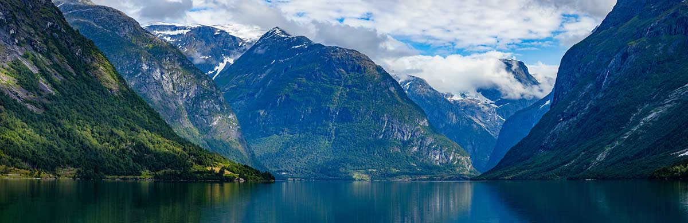

Explore the beauty of Norway
Do you want to experience the wonderful norwegian nature in an environmentally friendly way? If so, you should book a bicycle tour with us! You don't have to be a professional cyclist to enjoy our tours. We have both leisurely routes and long, tough trails to offer.
View ToursCyclists Welcome
Cyclists Welcome is a scheme that Norway and many other European countries have committed to. Companies that take part in this will offer cyclists a range of different services to provide the best possible experience of Norway from the seat of your bike. Some of these services are:
- Weather forecast
- Repair kits
- Accommodation
- Info on cycling routes
- Info on tourist attractions
- Secure bicycle parking